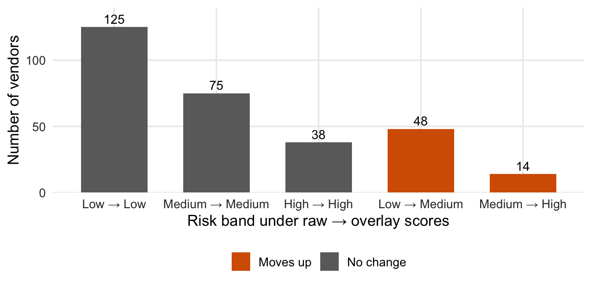

When VendorScore says a vendor has a 10% chance of an incident, do incidents happen about 10% of the time? RiskMetric Systems asserts that its scores are “well-calibrated.” NorthPoint cannot inspect the model, but it can compare the scores with what happened, and it can test whether a recalibration overlay would help.
Method in brief
Three non-overlapping windows keep the tests honest. VendorScore trained on months 1 to 30 (the vendor’s business). We fitted the overlay on months 31 to 36 (1,800 vendor-months, 28 incidents), so the classifier had not trained on those rows. Every result below comes from months 37 to 48 (3,600 vendor-months, 75 incidents, 300 vendors), which nothing was fitted or selected on.
We fixed the methods before looking at that window: an isotonic overlay (a monotone curve, interpolated between fitted points), and a Platt overlay (a logistic curve on the logit of the score) as secondary. Both come from probcal.1 The Brier score measures overall probability error, so it reflects more than calibration. The expected calibration error (ECE) is the weighted average gap between score and outcome across ten score groups; it depends on how groups are formed, so we show equal-size and equal-width groups. Uncertainty comes from resampling whole vendor histories (1,000 draws), because the same vendors recur every month. Intervals condition on the fitted overlay and leave out overlay-fitting uncertainty.
Figure 1: Reliability diagram, months 37–48. Filled points: observed rate with vendor-clustered 95% intervals. Open diamonds: mean true probability in the group.
How to read the plot. Each dot groups vendor-months with similar scores: left to right is the prediction, bottom to top is what happened. A dot on the grey diagonal means the model was right on average. The vertical line is a plausible range; the open diamond is the true average risk, known only because the data are simulated.
What the plot tells you. In the raw panel, the top group is the clearest miss. Only 75 incidents lie behind these dots, so single-group intervals are wide.
The raw top-scored group was told it faced 10.8%; 6.9% had an incident (interval 4.5% to 9.5%), and its true average risk was 5.2%. The observed rate exceeded the score in 8 of 10 groups, mostly low-scored ones. These intervals are pointwise, so they do not amount to a global test. The isotonic overlay collapses tied scores into 5 distinct groups, not ten.
Table 1: Calibration metrics, months 37–48. Changes are versus raw scores, with vendor-clustered 95% intervals.
Scores
Brier
Brier change vs raw
ECE, equal-size groups
ECE, equal-width groups
Incidents per month
Raw VendorScore
0.02107
—
0.0105
0.0086
5.7
Isotonic overlay
0.02081
−0.00026 (−0.00064 to 0.00004)
0.0068
0.0066
5.3
Platt overlay (logit scale)
0.02025
−0.00082 (−0.00196 to −0.00003)
0.0052
0.0052
5.2
Observed
—
—
—
—
6.2
How to read the table. Each row is a version of the scores; the last row is the actual count. Smaller Brier and ECE are better. The “change” column shows how each overlay moves Brier versus raw scores, with a plausible range in brackets. The last column is the incidents per month the scores imply.
What the table tells you. Both overlays lower Brier slightly, but the isotonic range includes zero and the Platt range only just excludes it. 3 of the 4 ECE changes have ranges that include zero. All three score versions imply fewer incidents (5.2 to 5.7 a month) than the 6.2 observed.
Overlay gains are small and statistically unclear. The raw count of 5.7 incidents a month is closest to what was observed. The true probabilities imply only 5.1, so some shortfall is chance. Changing vendor mix, thin calibration data and a six-month fitting window may all contribute; this exercise does not isolate them.
Show the code
mov <- cal$movesmov$path <-factor(paste(mov$from, "→", mov$to),levels =unique(paste(mov$from, "→", mov$to)[order(mov$move !="No change", mov$from)]))ggplot(mov, aes(path, Freq, fill = move)) +geom_col(width =0.65) +geom_text(aes(label = Freq), vjust =-0.4, size =3.8) +scale_fill_manual(values =c("No change"=unname(okabe_ito["grey"]),"Moves down"=unname(okabe_ito["blue"]),"Moves up"=unname(okabe_ito["vermillion"]))) +scale_y_continuous(expand =expansion(mult =c(0, 0.12))) +labs(x ="Risk band under raw → overlay scores", y ="Number of vendors", fill =NULL)

Figure 2: Vendors by risk band, raw versus isotonic-overlay scores (Low <1%, Medium 1–<3%, High ≥3% monthly probability; illustrative). A retrospective illustration.
How to read the plot. Vendors are put in Low, Medium or High risk bands using their average score over months 37 to 48. These bands are separate from the criticality tiers of vendors. Each bar counts vendors by band before and after the overlay.
What the plot tells you. 238 of 300 vendors keep their band and 62 move up; none move down. This shows the overlay’s decision impact, not that the new bands are right; averaging a whole window is a retrospective device, not a monitoring rule.
So what
The vendor’s calibration claim does not hold cleanly: the highest-risk group is overstated and the overlay evidence is thin. Outcomes analysis (§V) can support an overlay (§VII), but does not make one acceptable by itself. This one has not shown fitness for the use: Brier gains are small, ECE changes are mostly indistinguishable from zero, and no operational acceptance threshold was set in advance, so we do not invent one. This is a corrected retrospective demonstration, not a prospective validation, and only partial validation: it cannot say why the scores are miscalibrated or whether the proprietary method is conceptually sound.
NoteTechnical note: kernel calibration test (exploratory)
The kernel test in probcal::cal_test() on raw scores gives p = 0.023. It treats rows as independent although vendors recur monthly, so we do not rely on it.
Committee action
Sound practice suggests not approving the tested overlay for routine use yet: investigate the shortfall, keep the existing process under documented controls, and validate any replacement on later outcomes against tolerances set in advance. Include a reliability diagram in every validation pack. The April 17, 2026 interagency Supervisory Guidance on Model Risk Management (Federal Reserve, FDIC, OCC) refers to the bank’s own established performance thresholds (§V).
Footnotes
probcal 0.2.0: cal_isotonic(), cal_platt(), ece() and cal_test().↩︎